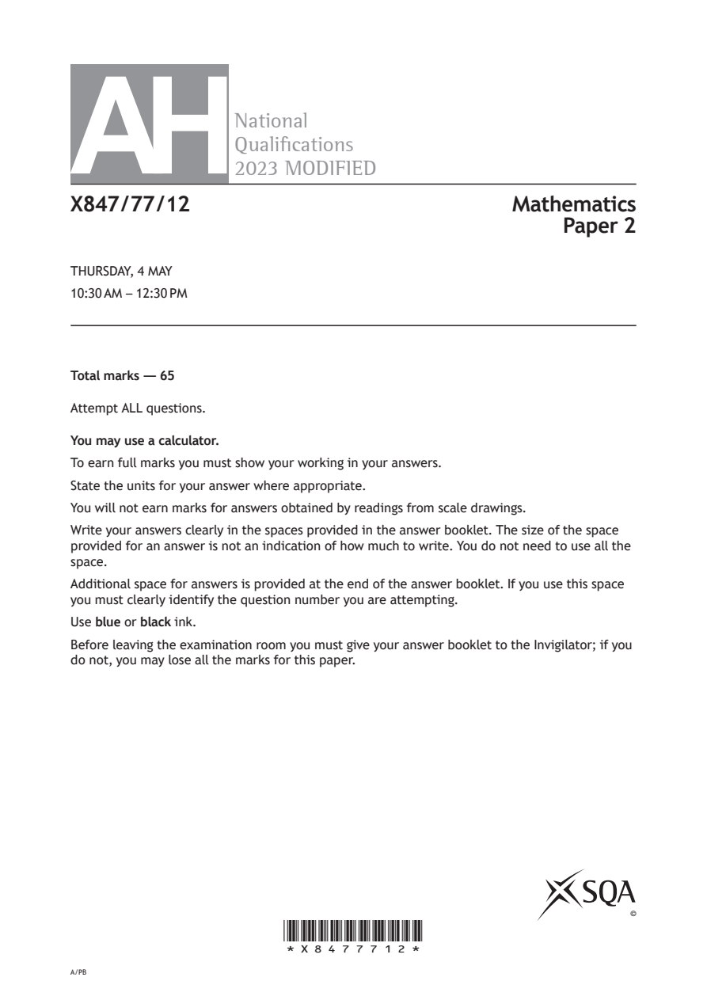
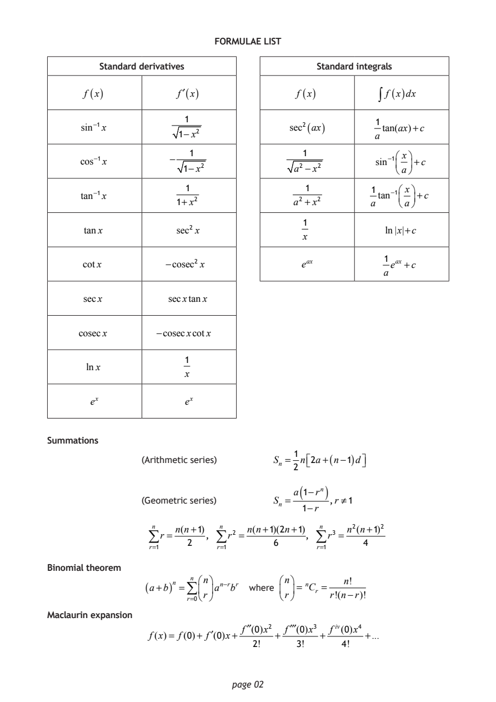
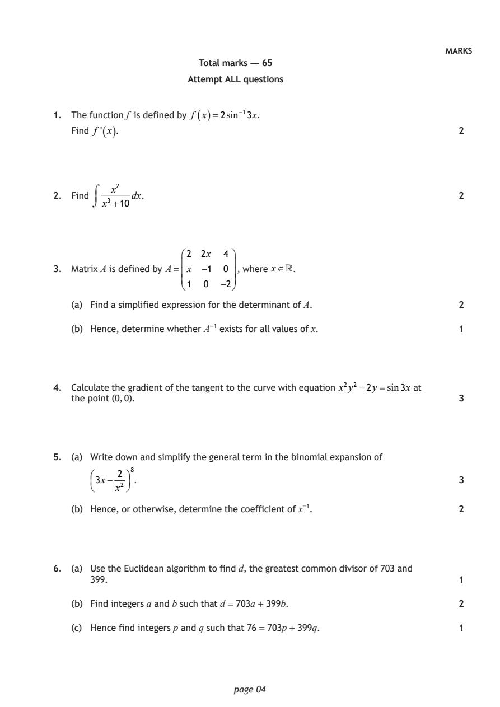
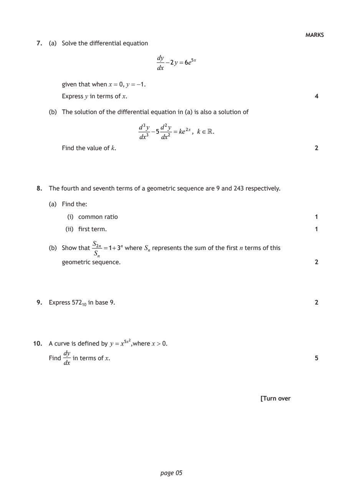
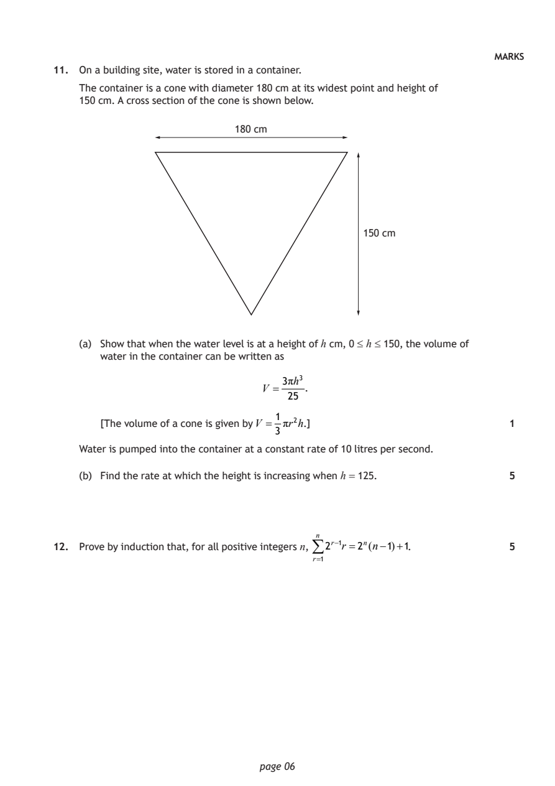
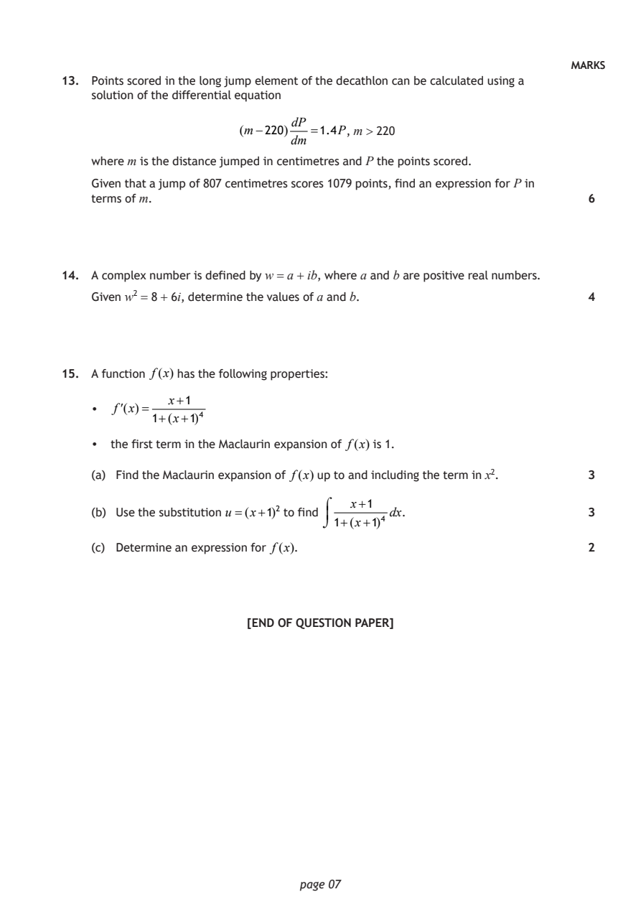

2023 Advanced Higher Mathematics - Paper 2 questions
Source: Scottish Qualifications Authority (SQA) / Qualifications Scotland. This is a StemInteract HTML companion, not an official HTML edition. Selectable text is supplied alongside original page images. Use the images or original PDF for equations, powers, fractions, vector notation, tables and diagrams; text extraction cannot fully preserve mathematical layout.
Jump to a question
PDF page 1

Selectable page text
AH
National
Qualications
2023 MODIFIED
X847/77/12 Mathematics
Paper 2
THURSDAY, 4 MAY
10:30 AM – 12:30 PM
Total marks — 65
Attempt ALL questions.
You may use a calculator.
To earn full marks you must show your working in your answers.
State the units for your answer where appropriate.
You will not earn marks for answers obtained by readings from scale drawings.
Write your answers clearly in the spaces provided in the answer booklet. The size of the space
provided for an answer is not an indication of how much to write. You do not need to use all the
space.
Additional space for answers is provided at the end of the answer booklet. If you use this space
you must clearly identify the question number you are attempting.
Use blue or black ink.
Before leaving the examination room you must give your answer booklet to the Invigilator; if you
do not, you may lose all the marks for this paper.
©
*X8477712*
A/PBPDF page 2

Selectable page text
FORMULAE LIST
Standard derivatives Standard integrals
f (x) f′(x) f (x) ∫ f (x)dx
1
1
sin⁻¹x sec²(ax) tan(ax)+c
1−x² a
1 1 ⎛ x⎞
cos⁻¹x
−
sin⁻¹⎜ ⎟+c
1−x² a² −x² ⎝a⎠
1 1 1 ⎛ x⎞
tan⁻¹x tan⁻¹⎜ ⎟+c
1+x² a² +x² a ⎝a⎠
1
tanx sec² x ln|x|+c
x
1
cotx −cosec²x e^{a}^{x} e^{a}^{x} +c
a
secx secxtanx
cosecx −cosecxcotx
1
lnx
x
e^{x} e^{x}
Summations
1
(Arithmetic series) Sₙ = n⎡2a+(n−1)d⎤
⎣ ⎦
2
( )
a 1−rⁿ
(Geometric series) Sₙ = ,r ≠1
1−r
n n(n+1) n n(n+1)(2n+1) n n²(n+1)²
∑r = , ∑r² = , ∑r³ =
2 6 4
r=1 r=1 r=1
Binomial theorem
n ⎛n⎞ ⎛n⎞ ₙ n!
(a+b)ⁿ =∑ ⎜ ⎟aⁿ⁻^{r}b^{r} where ⎜ ⎟= Cᵣ =
⎝r⎠ ⎝r⎠ r!(n−r)!
r=0
Maclaurin expansion
f′′(0)x² f′′′(0)x³ fⁱ^{v}(0)x⁴
f(x)= f(0)+ f′(0)x+ + + +...
2! 3! 4!
page 02PDF page 3

Selectable page text
FORMULAE LIST (continued)
De Moivre’s theorem
[r(cosθ+isinθ)]ⁿ =rⁿ(cosnθ+isinnθ)
Vector product
a×b= a bsinθnˆ
i j k
a₂ a₃ a₁ a₃ a₁ a₂
= a₁ a₂ a₃ =i −j +k
b₂ b₃ b₁ b₃ b₁ b₂
b₁ b₂ b₃
Matrix transformation
⎛cosθ −sinθ⎞
Anti-clockwise rotation through an angle, θ, about the origin, ⎜ ⎟
⎝sinθ cosθ ⎠
[Turn over
page 03PDF page 4
Paper 2, Question 1Paper 2, Question 2Paper 2, Question 3Paper 2, Question 4Paper 2, Question 5Paper 2, Question 6
Selectable page text
MARKS
Total marks — 65
Attempt ALL questions
1. The function f is defined by f ( x )=2sin⁻¹3x.
Find f ' ( x ). 2
x²
2. Find dx. 2
x³ +10
2 2x 4
3. Matrix A is defined by A= x −1 0 , where x.
1 0 −2
(a) Find a simplified expression for the determinant of A. 2
(b) Hence, determine whether A⁻¹ exists for all values of x. 1
4. Calculate the gradient of the tangent to the curve with equation x²y² −2y =sin3x at
the point (0, 0). 3
5. (a) Write down and simplify the general term in the binomial expansion of
2 ⁸
3x− . 3
x²
(b) Hence, or otherwise, determine the coefficient of x⁻¹. 2
6. (a) Use the Euclidean algorithm to find d, the greatest common divisor of 703 and
399. 1
(b) Find integers a and b such that d = 703a + 399b. 2
(c) Hence find integers p and q such that 76 = 703p + 399q. 1
page 04PDF page 5
Paper 2, Question 7Paper 2, Question 8Paper 2, Question 9Paper 2, Question 10
Selectable page text
MARKS
7. (a) Solve the differential equation
dy
−2y =6e⁵^{x}
dx
given that when x = 0, y = −1.
Express y in terms of x. 4
(b) The solution of the differential equation in (a) is also a solution of
d³y d²y
−5 =ke²^{x}, k.
dx³ dx²
Find the value of k. 2
8. The fourth and seventh terms of a geometric sequence are 9 and 243 respectively.
(a) Find the:
(i) common ratio 1
(ii) first term. 1
S₂ₙ
(b) Show that =1+3ⁿ where Sₙ represents the sum of the first n terms of this
Sₙ
geometric sequence. 2
9. Express 572₁₀ in base 9. 2
10. A curve is defined by y = x⁵^{x}²,where x > 0.
dy
Find in terms of x. 5
dx
[Turn over
page 05PDF page 6
Paper 2, Question 11Paper 2, Question 12
Selectable page text
MARKS
11. On a building site, water is stored in a container.
The container is a cone with diameter 180 cm at its widest point and height of
150 cm. A cross section of the cone is shown below.
180 cm
150 cm
(a) Show that when the water level is at a height of h cm, 0 ≤ h ≤ 150, the volume of
water in the container can be written as
3πh³
V = .
25
1
[The volume of a cone is given by V = πr²h.] 1
3
Water is pumped into the container at a constant rate of 10 litres per second.
(b) Find the rate at which the height is increasing when h = 125. 5
12. Prove by induction that, for all positive integers n, ⁿ 2^{r}⁻¹r =2ⁿ(n−1)+1. 5
r=1
page 06PDF page 7
Paper 2, Question 13Paper 2, Question 14Paper 2, Question 15
Selectable page text
MARKS
13. Points scored in the long jump element of the decathlon can be calculated using a
solution of the differential equation
dP
(m−220) =1.4P, m > 220
dm
where m is the distance jumped in centimetres and P the points scored.
Given that a jump of 807 centimetres scores 1079 points, find an expression for P in
terms of m. 6
14. A complex number is defined by w = a + ib, where a and b are positive real numbers.
Given w² = 8 + 6i, determine the values of a and b. 4
15. A function f(x) has the following properties:
x+1
• f(x)=
1+(x+1)⁴
• the first term in the Maclaurin expansion of f(x) is 1.
(a) Find the Maclaurin expansion of f(x) up to and including the term in x². 3
x+1
(b) Use the substitution u =(x+1)² to find dx. 3
1+(x+1)⁴
(c) Determine an expression for f(x). 2
[END OF QUESTION PAPER]
page 07PDF page 8

Selectable page text
[BLANK PAGE]
DO NOT WRITE ON THIS PAGE
page 08